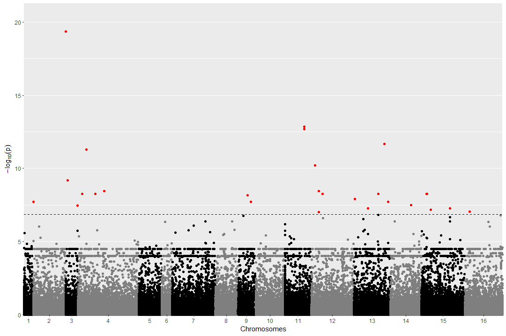
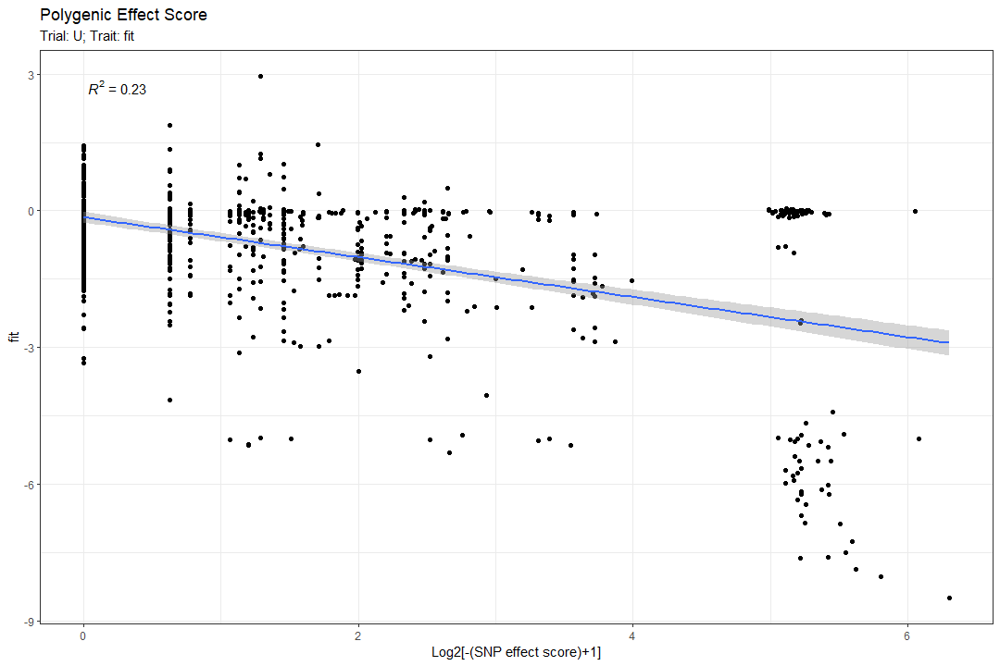
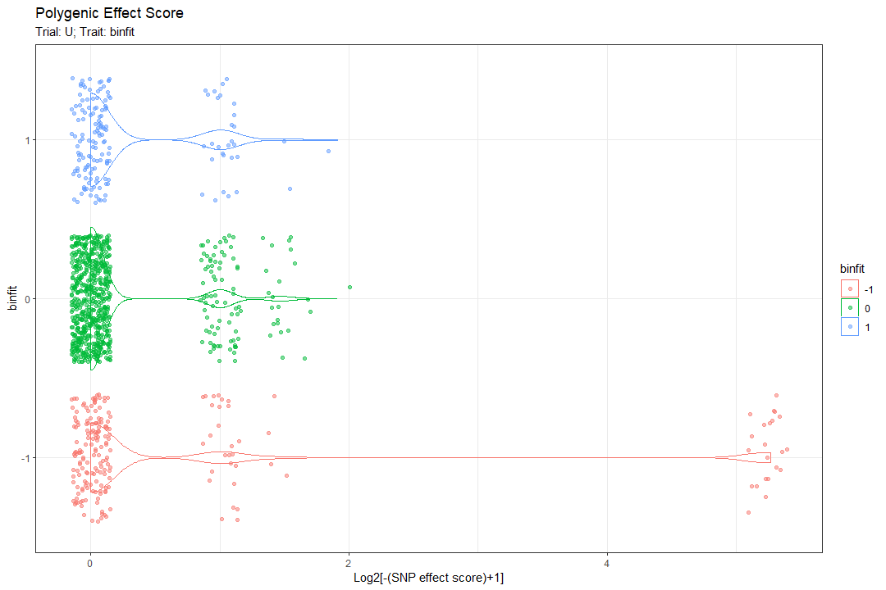

Chapter 2 - Run GWAS and Analyze
3) Chapter 2.RmdIf you have access to the Rmarkdown files, you’ll find the files for this chapter here
In this chapter the GWAS is executed and the results are then analyzed. The package “statgenGWAS” is the package that will mainly be used. To run the single-trait-GWAS, an object known as “gData” object needs to be provided.
Step 2.1 - Create gData
In this step a “gData” object is created. It will contain all data needed for performing analyses, so the first thing to do when using the statgenGWAS package is to create it.
The gData object consists of a few components:
- The Marker map (
map) - is used to describe the physical positions of the markers on the chromosomes. The data consists of two columns,chrfor the name or number of the chromosome andposfor the position of the marker on the chromosome.
- The Marker matrix (
marker) - contains the names of the markers in column names and the genotypes in the row names. Markers can either be coded as character strings or as numerical values.
- Phenotypic data (
pheno) - can either be a single data.frame or a list of data.frames for storing data for different trials or different summarizations of the original data. The first column of all elements ofphenoshould be genotype and all the other columns should represent different traits.
Hence, we begin with collecting the “phenotypic” data.
The phenotypes need to be loaded into the functions as a data.frame of features in which:
First column - contains all strain names. Name: “genotype”
-
Second column - contains the trial parameter (example: “Glucose” or “Glycerol”).
[if you don’t have any (only one condition), give the column a generic identical value for all rows]
Rest of the columns are the features and need to have clear names and numeric values.
The gData also accepts covariates. Read more about the covariate option in the statgenGWAS package vignette. The covariate is entered to the function as a data.frame with strains as rownames. Make sure you notice all the parameters before running the create_gData function (such as where the results will be saved)
Categorized features need to include the word “bin” in them (just because that’s how I wrote the code)
Step 2.2 - Single Trait GWAS
In this step, the “single trait GWAS” will be executed based on the gData object from the previous step.
If you wish to add randomization to your data (mix up the features) this is the step to do that.
Eventually, the runSingleTraitGWAS from “statgenGWAS” is used. If given only the gData, it executes the GWAS using bonferroni for multiple test correction (you can change it by changing the “thrType” parameter) and I advise to read the documentation of the function (click the link above).
This is also the step to separate your gData into training and testing strains if you wish to do so before running the GWAS.
The output here is a GWAS object, out of which we will mainly use “GWAResult” and “signSnp”.
Both are lists with the “results”/“significant snps” for each tested media (what is called “trial”)
GWAS result output
Step 2.3 - Conclusions
The idea of this step is get a grasp on your results:
QQ:
Use a Quantile-Quantile plot to see if the p-values are uniformly distributed (up until some SNPs have a higher quantile than expected). Something like this is good (taken from actual results):

This can be achieved by using the “qqman” package with the “qq” function, or by using the plot function of the “statgenGWAS” package.
Manhattan:
Next you use a Manhattan plot to show if SNPs were found significant above the p-value threshold (Bonferroni or FDR)
Either a simple version as can be created using the statgenGWAS package plot function: plot(GWAS, trial="U",trait="fit")

Or by calling the VCFtoGWAS plot_manhattan function, using ggplot and adding more info:

Polygenic Effect Score:
Next, we compute the cumulative polygenic effect score of all the significant SNPs on the fitness. Explanation:
Ss = Score of a strain
VA = variant (snp) appearance in that strain (0/1/2)
VE = Variant effect (according to the GWAS), can be positive or negative.
Ss(i) = [VA(1)xVE(1) + VA(2)xVE(2) +…+ VA(n)xVE(n) Or in other terms: \[Ss_{i} = \sum_{i=1}^{n} VA_{i}\times VE_{i} \\\]
We may assume “Haploinsufficiency1” for all the SNPs when calculating the score by choosing haplo_sufficency = FALSE in the function “polygenic_effect_score”
But if it is TRUE than “Haplo Sufficiency” is assumed and all the places of “1” (a/A) are changed to “0” (as if they are A/A) and all the places of “2” (a/a) are given a “1” instead.
Another parameter that will affect the plotted results is the do_log2. If true, instead of plotting the “Ss” on the X axis, the \(log_2[(-Ss)+1]\) is plotted (in our case, we expect most if not all the SNPs are detrimental, so the scores will be either 0 or negative).
One other thing: notice that out of this function you get 2 outputs!
One of them is the plot itself and the second is a data frame with a column of the trait and a column of the score, this allows further analysis of the results if required (either in R or by exporting it to a csv)
Here are 2 examples of the plot output (one for a regular feature and the other for a categorized feature):


Trait distribution per SNP alleles:
To grasp the manner in which a trait distributes across all the SNPs, 3 distributions of the trait are drawn for each SNP:
1st for the strains that are homozygous for the major allele (don’t have the SNP), 2nd for heterozygous strains for the SNP, and 3rd for homozygous for the minor allele (have the SNP in both alleles).
 In the plot above, each box represents a SNP that was identified as significant. The X axis represents the trait (fitness in this case) and the y axis the density (frequency). The color represents the allele presence (0/0 is A/A, 0/1 is a/A, 1/1 is A/A). In each box, the number of times the “SNP presence” appears in the population is noted (top left). This plot gives a slight intuition regarding the effect of each SNP on its own (also regarding haplosufficiency)
In the plot above, each box represents a SNP that was identified as significant. The X axis represents the trait (fitness in this case) and the y axis the density (frequency). The color represents the allele presence (0/0 is A/A, 0/1 is a/A, 1/1 is A/A). In each box, the number of times the “SNP presence” appears in the population is noted (top left). This plot gives a slight intuition regarding the effect of each SNP on its own (also regarding haplosufficiency)
 In the plot above, each box represents a SNP that was identified as significant. The discrete X axis represents the categorized trait (binary fitness in this case) and the y axis the allele presence (0/0 is A/A, 0/1 is a/A, 1/1 is A/A). In bubble, the number of times that the “SNP presence” appears in the population, for the specific feature category, is noted (top left). This plot also gives a slight intuition regarding the effect of each SNP on its own (also regarding haplosufficiency)
In the plot above, each box represents a SNP that was identified as significant. The discrete X axis represents the categorized trait (binary fitness in this case) and the y axis the allele presence (0/0 is A/A, 0/1 is a/A, 1/1 is A/A). In bubble, the number of times that the “SNP presence” appears in the population, for the specific feature category, is noted (top left). This plot also gives a slight intuition regarding the effect of each SNP on its own (also regarding haplosufficiency)
these plots are created using the allele_presence_plot function.
Exporting the results:
The markdown allows the creation of each plot on its own or creation of a PDF file with all of them for all the media and all the feature (including the randomized features) with exporting CSVs for each.
The plots will be vectors (high quality) and might be heavy. I recommend to open the PDF and print it as a PDF in a lower quality for faster skimming.
The exported CSV looks something like this (per media per feature):
| snp | chr | pos | effect | allFreq | pValue | rom_chr | REF | ALT | gene | start | end | strand | description | ref_dna | alt_dna | ref_aa | alt_aa |
|---|---|---|---|---|---|---|---|---|---|---|---|---|---|---|---|---|---|
| rs75889 | 4 | 432626 | -1.917754411 | 0.055099648 | 3.84E-09 | IV | G | A | YDL011C | 432308 | 432631 | - | Dubious open reading frame; unlikely to encode a functional protein, based on available experimental and comparative sequence data; overlaps the uncharacterized ORF YDL010W [Source:SGD;Acc:S000002169] | atggcc… | atggcc… | MAD...* | MAD…* |
| rs84422 | 4 | 657869 | -1.726109591 | 0.069167644 | 2.13E-09 | IV | G | A | YDR102C | 657648 | 657980 | - | Putative protein of unknown function; conserved among S. cerevisiae strains; YDR102C is not an essential gene; homozygous diploid deletion strain exhibits high budding index [Source:SGD;Acc:S000002509] | atgact… | atgact… | MTL...* | MTL...* |
| rs144135 | 6 | 89046 | -1.15215202 | 0.106682298 | 4.93E-07 | VI | T | G | YFL024C | 87847 | 90345 | - | Subunit of NuA4, an essential histone H4/H2A acetyltransferase complex; conserved region at N-terminus is essential for interaction with the NPC (nucleosome core particle); required for autophagy; homologous to Drosophila Enhancer of Polycomb; coding sequence contains length polymorphisms in different strains [Source:SGD;Acc:S000001870] | atgccg… | atgccg… | MPT...* | MPT...* |
| rs174979 | 7 | 531498 | -1.967251191 | 0.032239156 | 3.33E-07 | VII | G | A | NA | NA | NA | NA | NA | NA | NA | NA | NA |
| … | … | … | … | … | … | … | … | … | … | … | … | … | … | … | … | … | … |
Files that contain info about the genes (that the significant SNPs might be in) are included in the package. The data is taken from the CDS file of Saccharomyces Cerevisiae.